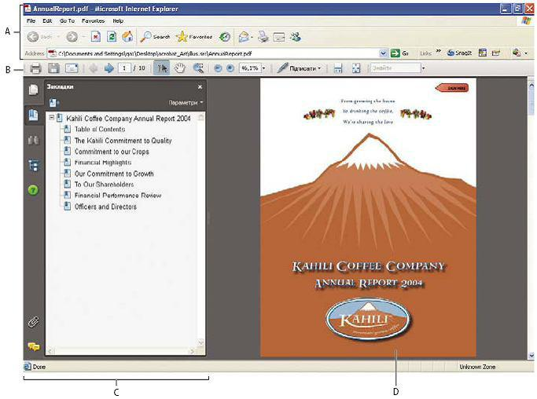
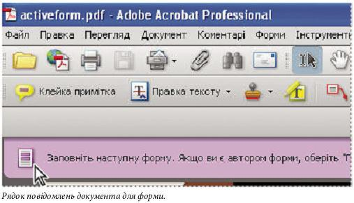
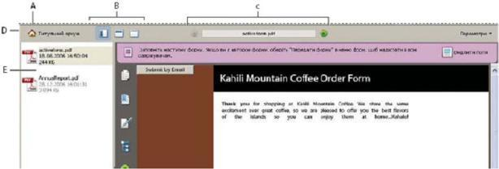

Теоретична частина
Для роботи з pdf-файлами розроблено велику кількість програмного забезпечення. Більшість з них є вільними для завантаження та використання. Найбільш популярними в даний момент є:
- Adobe (Acrobat) Reader.
- FoxitReader.
- PDF-XChangeViewer.
- SumatraPDF.
Всі ці програми мають аналогічний інтерфейс з деякими відмінностями.
Для прикладу, розглянемо роботу з програмою Adobe® Acrobat® 8.
Коли ми знайомимось з програмою Adobe® Acrobat® 8 Professional, в першу чергу, варто дізнатися, як налаштувати своє робоче Acrobat-середовище. Чим більше ви будете знати про її можливості, то краще ви зможете використовувати переваги її функцій, інструментів та інших опцій.
У програмі є багато різноманітних речей, які неможливо помітити з першого погляду. У програмі Acrobat є приховані інструменти, вікна налаштування параметрів та опції, які надають додаткові зручності і додаткові можливості для упорядкування робочого середовища та оформлення його зовнішнього вигляду.
Налаштування робочої області
Ви можете змінити робочу область за вашими потребами.
- Щоб змінити панелі інструментів, що з’явилися, оберіть “Перегляд” > “Панелі інструментів” та виберіть бажані панелі інструментів.
- Щоб змінити вигляд вікна навігації, клацніть на одній із кнопок ліворуч від вікна навігації.
- Щоб налаштувати кольори дисплея для тла сторінки і тексту документа, оберіть “Правка” > “Уподобання” > “Зручність”.
- Щоб встановити усталений рівень масштабування і макет сторінки, оберіть “Правка” > “Уподобання” > “Відображання сторінки”.
Переміщення панелі інструментів
Деякі панелі інструментів, такі як панель інструментів “Завдання”, з’являються в області панелей інструментів. Інші, такі як панель інструментів “Коментарі та позначки”, відкриваються як плавучі панелі.
Щоб пересунути панель інструментів, потягніть за смугу на лівім краї панелі:
- Перетягніть панель на нове місце в області панелей інструментів.
- Перетягніть панель поза межі області панелей інструментів, щоб створити плавучу панель.
- Перетягніть плавучу панель на область панелей інструментів.
Додавання інструментів та панелей інструментів
Ви можете налаштовувати Acrobat показ інструментів і панелей інструментів, які ви використовуєте найчастіше. Зробіть правий клік/Control-клік на панелі інструментів та виконайте ту чи іншу дію:
- Виберіть кнопки, які бажаєте показувати.
- Виберіть “Показати/сховати панелі” та виділіть панелі, які бажаєте показати.
- Виберіть “Більше інструментів” та виділіть панелі та кнопки, які повинні відображатися. Виберіть параметр ярлика у спливному меню.
Зміна вигляду інструменту або об’єкта
Ви можете легко змінювати властивості багатьох інструментів та об’єктів, включно з коментарями, полями форм та закладками.
- Зробіть правий клік/Control-клік на інструменті або об’єкті, що його бажаєте змінити.
- Виберіть “Властивості” або “Усталені властивості інструмента”.
- Встановіть потрібні властивості.
Щоб застосувати властивості об’єкта до всіх наступних об’єктів того самого типу, клацніть правою кнопкою миші об’єкт або клацніть його, утримуючи клавішу Control, та установіть прапорець “Зробити поточні властивості стандартними” або “Використовувати поточні властивості як значення за замовчуванням”.
Зміна режиму перегляду
Щоб дати більше місця для читання документа, ви можете змінити режим перегляду. Виберіть “Перегляд” > “Режим читання” або “Режим на весь екран”.
У режимі “Читання” панелі інструментів і навігаційне вікно приховані, але відображається рядок меню. У режимі “На весь екран” приховано все, окрім документа. Щоб вийти з режиму на весь екран, натисніть Esc.
Перегляд PDF-файлів у пакетах
Пакет Adobe PDF відкриває список PDF-файлів, що їх він містить, і навігаційну панель пакета PDF.
Відкрийте пакет і зробіть те або інше з наведеного нижче:Щоб переглянути PDF-файл, виділіть його в списку PDF-файлів або клацніть на “Відкрити наступний” або “Відкрити попередній”.
Щоб змінити положення списку PDF-файлів, клацніть на одному зі значків положення списку.
Щоб скористатися командами, що стосуються пакетів, клацніть на “Параметри” та виберіть потрібну команду.
Перегляд вкладених файлів
PDF-файл може містити інші вкладені PDF-файли як окремі файли чи як PDF-пакет. Коли ви відкриваєте PDF-файл, що містить вкладення, автоматично відкривається панель “Вкладені файли”.
Двічі клацніть потрібний PDF-файл. Вкладений файл відкривається в новому вікні.
Якщо вкладення є PDF-пакетом, відкривається перший PDF-файл пакета разом із списком усіх PDF-файлів у пакеті. Клацніть PDF-файл, щоб переглянути його.
Зменшення розміру PDF-файла
Зменшення розміру PDF-файлів сприяє підвищенню продуктивності роботи з ними, а надто якщо користувач одержує файли з Інтернету.
- Виберіть “Документ” > “Зменшити розмір файлу”.
- Виберіть потрібні параметри сумісності й натисніть кнопку “Гаразд”.
- Уведіть назву та розташування файлу й натисніть кнопку “Зберегти”.
Якщо ви впевнені, що всі користувачі мають Acrobat 8.0 або Adobe Reader 8.0, обмеження сумісності з останньою версією може додатково зменшити розмір файлу.
Перегляд робочої області
Acrobat відкривається двома різними способами: як окрема програма, що відкриває своє власне вікно, а також у вікні веб-переглядача. В залежності від способу відкриття, робоче середовище буде мати невеликі, але суттєві відмінності. Робоча область Acrobat містить вікно документа, у якомувідображаються PDF-файли, і панель навігації, розташовану зліва, за допомогою якої зручно переглядати поточний PDF. Панелі інструментів, розташовані у верхній частині вікна, надають користувачеві інші елементи керування, що полегшують роботу з документами PDF.
Примітка: при відкритті PDF-файлів певних типів відображуються спеціалізовані частини робочої області: рядок повідомлень документа та панель навігації для PDF-пакетів. При роботі з PDF-файлами інших типів ці області не використовуються і не відображаються.
Перегляд робочої області PDF-файлів, відкритих у програмі.
- Запустіть програму Acrobat за допомогою значка Acrobat на робочому столі, з меню"Пуск" (Windows) або у вікні “Finder” (Mac OS).
- Виберіть команду “Файл” > “Відкрити”, виберіть будь-який PDF-файл у комп’ютері і натисніть кнопку “Відкрити” PDF-файл, відкритий у Web-оглядачеві A. Рядок меню та кнопки програми перегляду Web B. панелі інструментів Acrobat C. Навігаційна панель (відображається панель “Закладки”) D. Вікно документа

Відкриття PDF-файлів
PDF-файл можна відкривати різноманітними способами: PDF-файл можна відкривати різноманітними способами: у програмі Acrobat, у програмі роботи з електронною поштою, у вашій файловій системі або у мережі за допомогою веб-переглядача. Вигляд документа PDF при відкриванні залежить від заданих автором властивостей.
Наприклад, документ може відкриватися на певній сторінці або у певному масштабі.Для відкриття деяких PDF-файлів потрібен пароль, який повинен надати власник PDF-файлу. Якщо документ захищений, то для його відкриття необхідно отримати від автора відповідні права доступу.
У випадку із сертифікованими документами або з обмеженим доступом, ви не зможете роздрукувати файл або копіювати інформацію в іншу програму. Якщо під час відкриття PDF-файлу виникли проблеми, або неможливо виконати певні функції, зверніться до автора або власника.
Якщо документ налаштований для відкриття в режимі “На весь екран”, панель інструментів, рядок команд, рядок меню й елементи керування вікном не відображаються. Щоб вийти з режиму “На весь екран”, треба натиснути клавішу Esc (якщо параметри налаштовані відповідним чином) або натиснути Ctrl+L чи Command+L.
Вибір іншого інструменту
За замовчуванням інструмент “Виділення” Acrobat є активним після відкриття , оскільки він є найбільш універсальним інструментом. Панелі та меню інструментів містять інструменти, призначені для виконання певних функцій, наприклад, для додавання коментарів або збільшення масштабу.
Вибір інструменту
Виконайте одну з наступних дій:
- Виберіть інструмент на панелі інструментів.
- Виберіть “Інструменти” -> [ім’я панелі інструментів] -> інструмент.
Тимчасове перемикання на інструмент “Наблизити” або інструмент “Ручка”
Ці інструменти можна використовувати тимчасово, не скасовуючи активність поточного інструменту.
Щоб тимчасово виділити інструмент “Ручка”, натисніть пробіл.
Щоб тимчасово виділити інструмент “Наближення”, натисніть сполучення клавіш Ctrl+spacebar або Command+spacebar.
Якщо відпустити ці клавіші, Acrobat повертається до інструменту, активного раніше.
Рядок повідомлень документа
Панель повідомлень документа з’являється лише у певних типах PDF-файлів. Зазвичай, ця панель відображається при відкриванні PDF-форм, PDF, надісланих вам для рецензування, та PDF з особливими правами доступу або з обмеженим доступом. Панель повідомлень документа негайно з’являється під областю панелі інструментів і може бути прихованою або видимою за допомогою натискання кнопки зліва від робочої області.
Перегляньте на панелі повідомлень документа вказівки щодо продовження та спеціальних кнопок, пов’язаних із завданням. У цьому кожен колір має своє значення: ліловий використовується для форм, жовтий — для рецензій, синій — для сертифікованих або захищених PDF-файлів.

Області навігації для PDF-пакетів
Коли відкривається PDF-пакет, відображаються дві особливі області:
Панель навігації для PDF-пакета Розташована безпосередньо під областю панелі інструментів. На цій панелі знаходиться кнопка “Обкладинка” , кнопки, за допомогою яких можна приховати список компонентів пакета або змінити його орієнтацію, кнопки для переходу до наступного або попереднього компонента документа, а також меню “Параметри” з командами для перегляду, редагування та використання PDF-пакета.
Список компонентів пакета За замовчуванням він відображається між панеллю навігації та вікном документа, але його можна приховати або розташувати вертикально ліворуч від панелі навігації. Якщо виділити файл у списку компонентів, то він відкриється у вікні документа.

A. Кнопка “Обкладинка” B. Кнопки налаштування відображення списку PDF C.“Відкрити попередній”, ім’я PDF-файлу, відкритого у вікні документа, “Відкрити наступний"Область навігації для PDF-пакета E. Список компонентів PDF (показаний вертикально)
Вікно “Початок роботи”
Вікно “Початок роботи” відкривається за замовчуванням після запуску програми Acrobat. Початкова сторінка у цьому вікні містить посилання, які відкривають додаткові сторінки. Усі сторінки вікна “Початок роботи” містять кнопки та посилання для запуску певних завдань або для відображення розділів повної довідкової системи Acrobat. Вікно “Початок роботи” можна закривати та відкривати, або просто тримати відкритим поряд із робочою областю Acrobat або на задньому плані.
Запуск завдання у вікні “Початок роботи”
На початковій сторінці вікна “Початок роботи” виберіть групу завдань, наприклад, “Створити PDF” або “Рецензування та коментарі”.
Запуск завдання та перегляд розділу довідки:
- Щоб розпочати виконання завдання, клацніть текстове посилання на дію або натисніть кнопку .
- Клацніть текстове посилання на сторінку з інформацією або
- натисніть кнопку щоб відкрити Acrobat відповідний розділ загальної довідки.
- Щоб вибрати іншу групу завдань, клацніть напис “Головна” у верхньому лівому кутку і поверніться на початкову сторінку вікна “Початок роботи”.
Повторне відкриття і відновлення запуску вікна “Початок роботи”
- Виберіть пункт “Довідка” > “Початок роботи в Adobe Acrobat”.
- Зніміть прапорець “Не показувати при запуску” у верхньому правому кутку.
ЗАВДАННЯ
- Ознайомитись та описати основні елементи панелей інструментів програми.
- Описати процес налаштування додаткових панелей інструментів та додавання кнопок на них.
- Описати відмінності програми перегляду pdf-файлів від інших програм перегляду документів (Word, Блокнот, WordPad, …)
- Описати переваги pdf-файлу над іншими форматами документів.